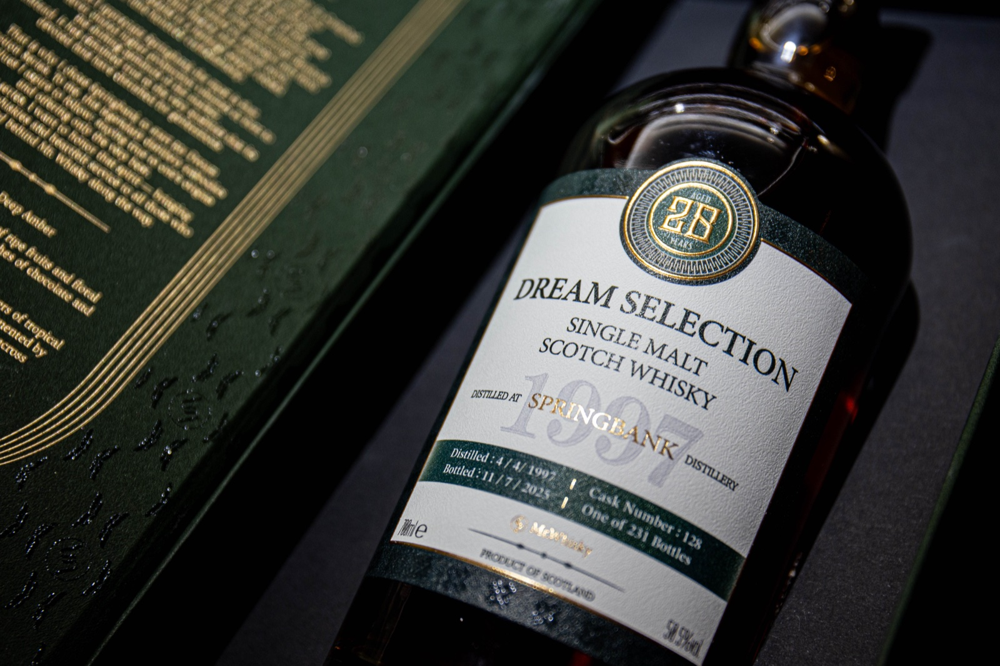
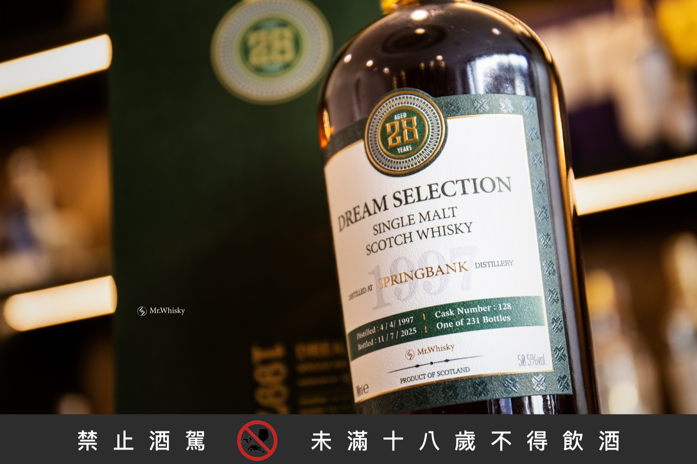
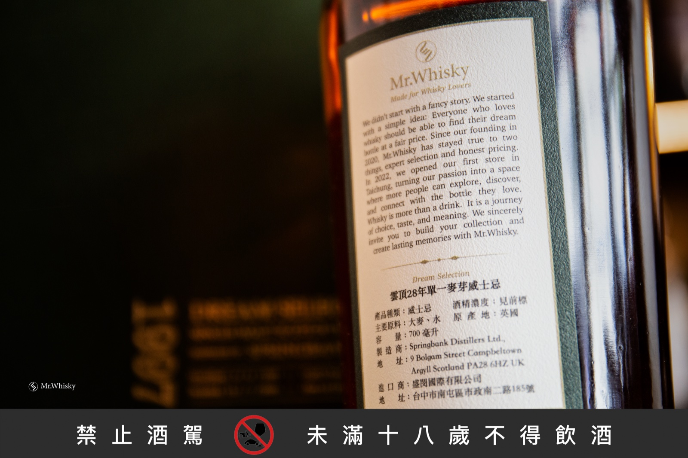
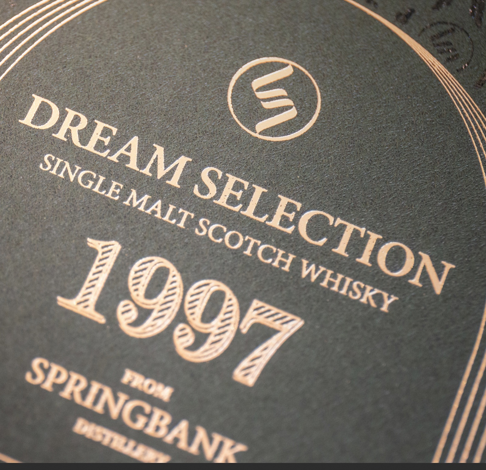
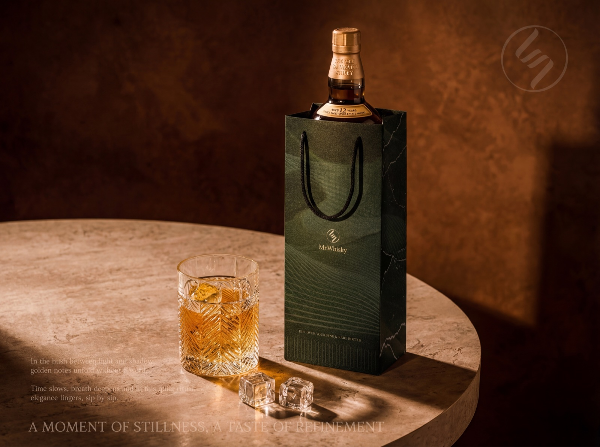

Photography Style
產品攝影風格
Mr.Whisky 產品攝影遵循「精品威士忌 × 沉穩低調」的視覺語言。下方參考圖呈現核心構圖與光線方向，文末守則為實際拍攝依據。
參考視覺 — 包桶系列：Dream Selection Springbank 1997
Mr.Whisky 為 Springbank 蒸餾廠 1997 年單桶私人包桶（28 年單一麥芽，第 128 號桶，全球僅 231 瓶）的整套視覺：禮盒、酒標、燙金細節、品牌故事與情境。可作為其他包桶或精品酒款攝影的調性基準。

整體情境 / 禮盒+酒瓶+酒櫃背景 / 平視構圖 / 暖琥珀調

禮盒+酒瓶斜角 / 主標聚焦 / 深綠+暖琥珀對比

酒標近拍 / 邊緣勾光 / 淺景深虛化酒櫃

背標特寫 / Mr.Whisky 品牌故事+中文資訊 / 深綠側暗背景

燙金細節微距 / 1997 + Springbank Distillery 紋理 / 用於主視覺強調包桶質感
參考視覺 — 紙袋情境攝影
深綠 Mr.Whisky 紙袋（X 形花紋輔助圖案）配合產品實拍。示範如何把品牌物件納入餐桌情境而不喧賓奪主。

紙袋+老式杯+冰球 / 暖光側打 / 大理石桌面 / 文字疊圖底部

山崎 12 + 雙紙袋 / 產品對照構圖 / 暖琥珀光氛
拍攝守則
| 項目 | 建議 | 禁忌 |
|---|---|---|
| 背景 | ✓ 黑色 / 深棕 / 深綠 | ✗ 純白、彩色、雜亂環境 |
| 光線 | ✓ 自然光、暖色側光 45° | ✗ 螢光燈、頂光、強閃光 |
| 構圖 | ✓ 酒瓶置中、平視或略低 | ✗ 大幅傾斜、廣角變形 |
| 後製色調 | ✓ 暖琥珀調、低飽和、保留質感 | ✗ 高對比 HDR、銳化過度 |
| 道具 | ✓ 木板、酒杯、皮革、深色布料 | ✗ 鮮豔花卉、塑膠製品、現代風小物 |
| 水印 / Logo | ✓ 右下角小尺寸白色 Logo（半透明） | ✗ 大尺寸、彩色 Logo 蓋住主體 |